01首页 — 工作台
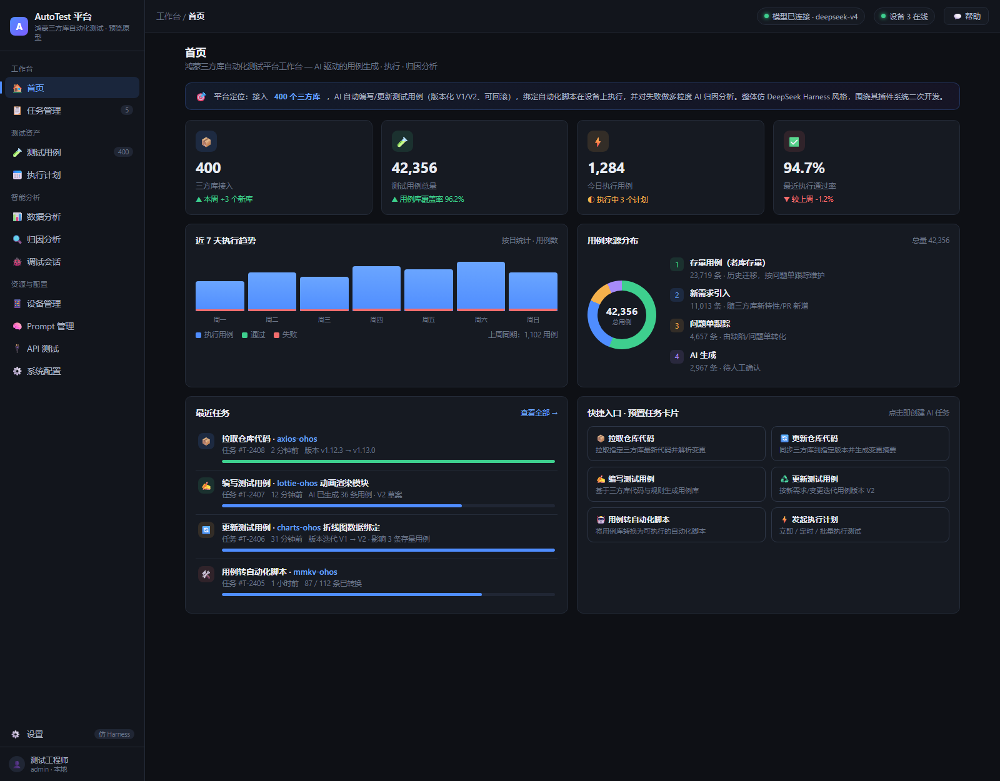
KPI 概览 · 执行趋势 · 用例来源分布 · 最近任务 · 快捷入口
02任务管理
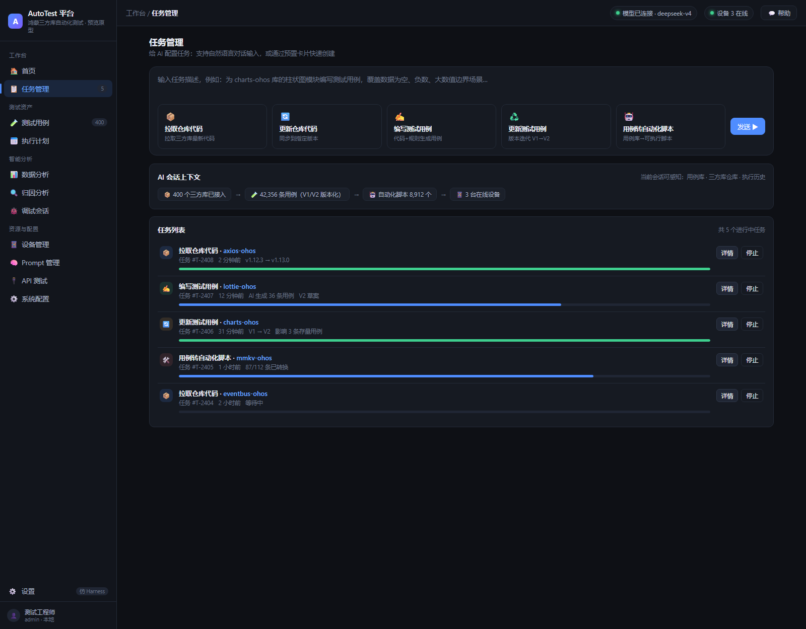
对话输入 + 5 类预置卡片（拉取/更新代码、编写/更新用例、转自动化脚本）
03测试用例
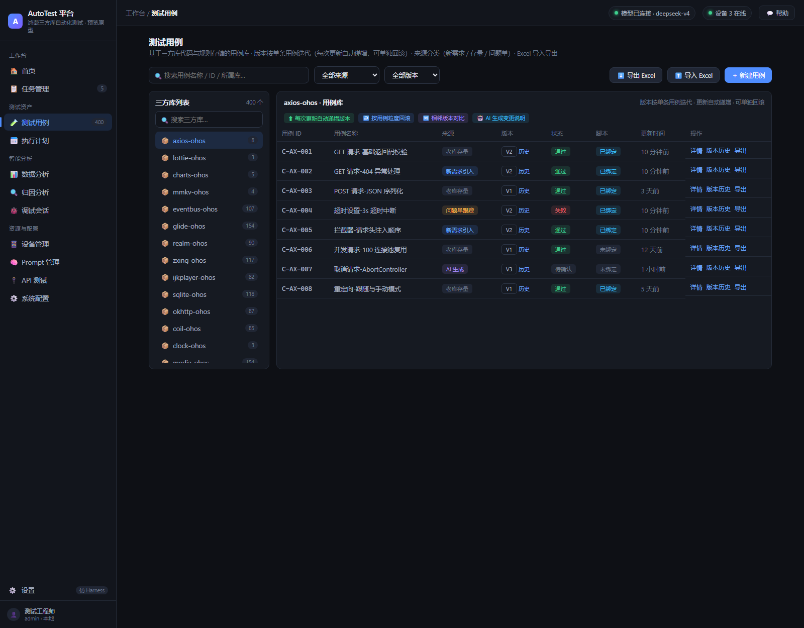
400 库导航 · 来源分类（新需求/存量/问题单/AI）· 版本按单条用例迭代（自动递增 V1→V2→V3…）· Excel 导入导出
04执行计划
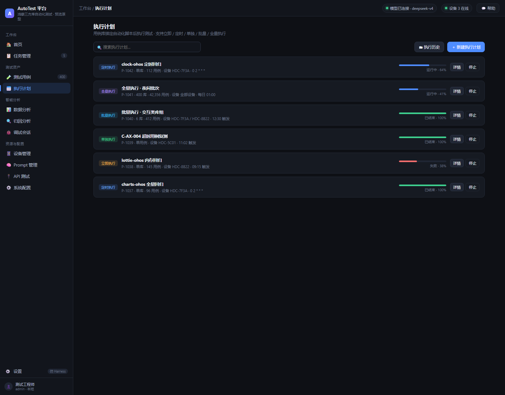
立即/定时/单独/批量/全量执行 · Cron · 设备选择 · 失败处理策略
05数据分析
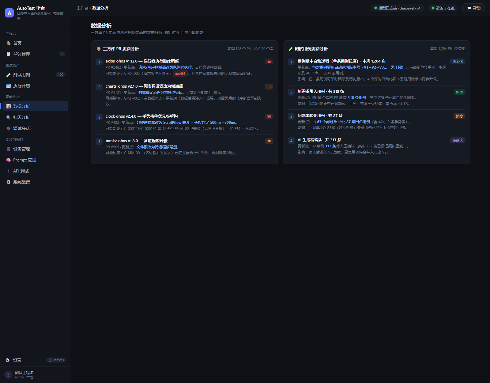
三方库 PR 更新分析 · 用例更新分析（版本递增统计）· 更新点 + 可能影响 + 风险等级
06归因分析
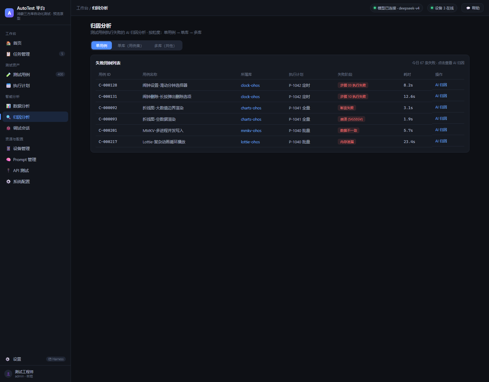
三粒度切换：单用例 → 单库用例集 → 多库共性 · AI 根因 + 置信度
07调试会话
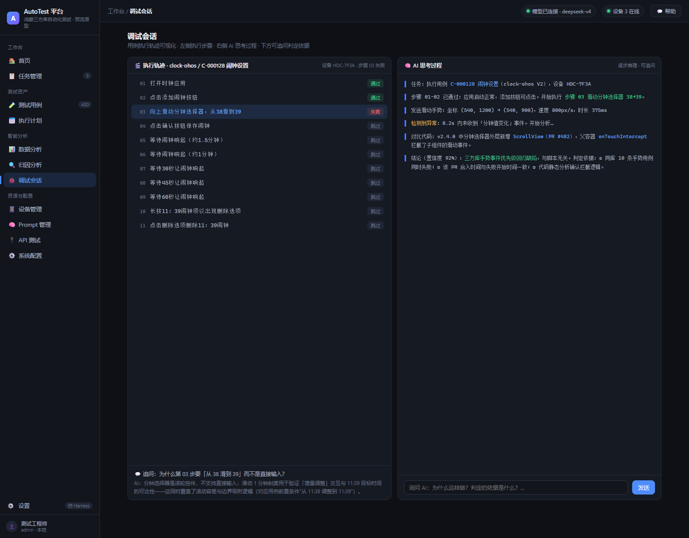
左侧执行轨迹（闹钟示例 11 步）· 右侧 AI 思考过程 · 下方追问判定依据
08设备管理
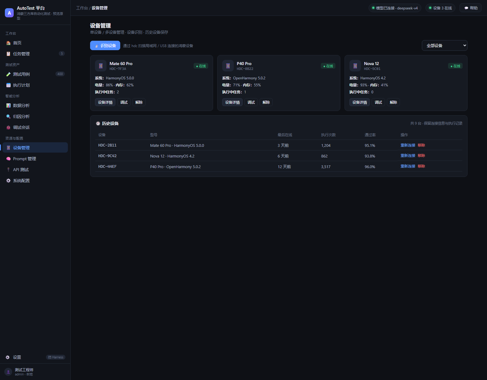
在线设备 · 一键识别（hdc 扫描）· 历史设备保留 · 执行记录
09Prompt 管理
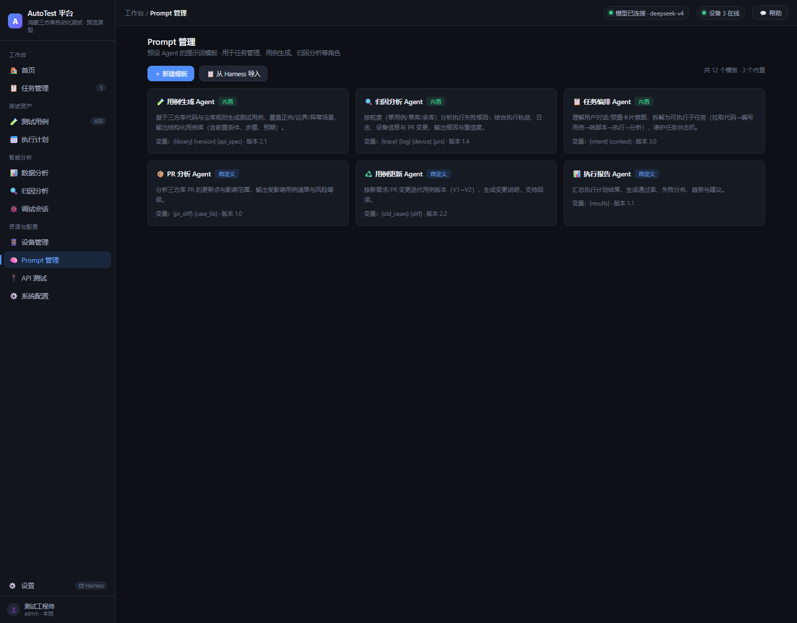
Agent 提示词模板 · 变量注入 · 内置/自定义
12设置（仿 DeepSeek Harness）
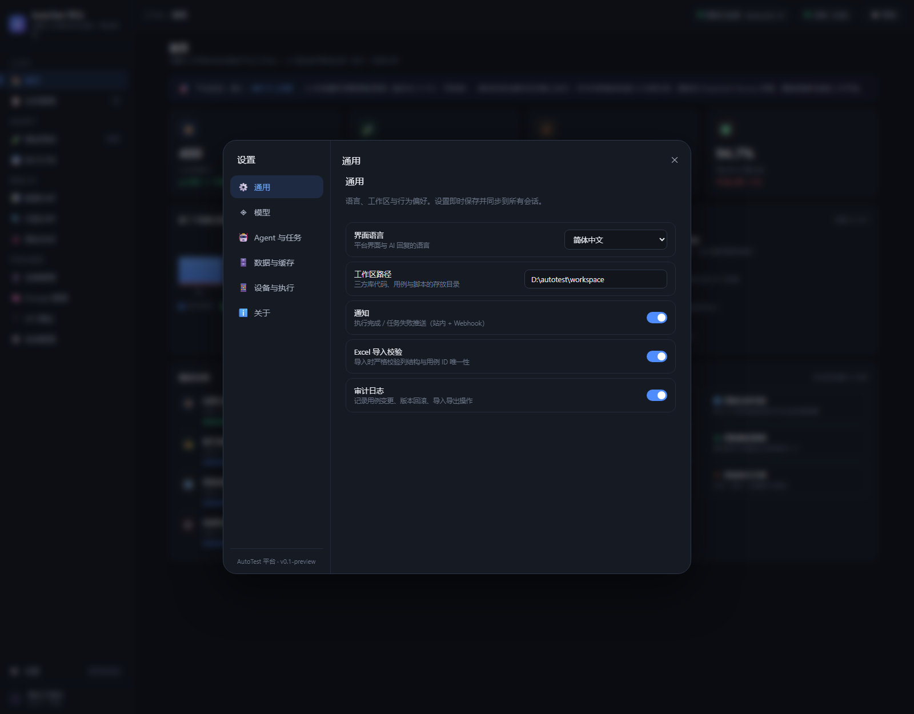
按 DSH 源码 1:1 还原：居中模态 24px 圆角 · 188px 左侧导航栏（通用/模型/Agent 与任务/数据与缓存/设备与执行/关于）· 行卡片 + 胶囊按钮 + 凭据状态点；模型连通性测试已并入「模型」分区（原 API 测试模块已移除）
13用例版本历史（单条用例粒度）
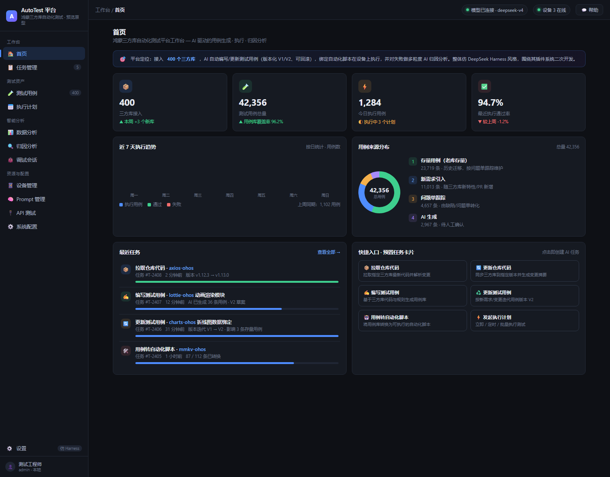
右侧抽屉：单条用例的 V1→V2→V3 时间线 · 每次更新自动递增 · 任一条目可回滚/对比 · 显示更新点与操作者